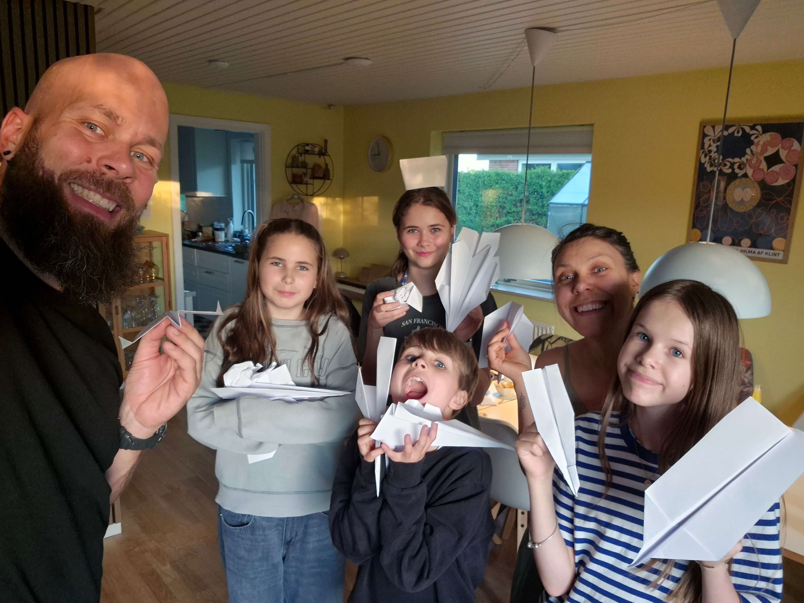

⬅ Tilbage til julekalenderen10. december

Fem børn og et hjem fyldt med papirfly
Et hjem fyldt med grin, fem fantastiske børn og en kvinde, der får det hele til at hænge sammen.
Nogle gange styrter papirflyene til jorden, men ligesom vores familie bliver de sendt afsted igen. ❤️